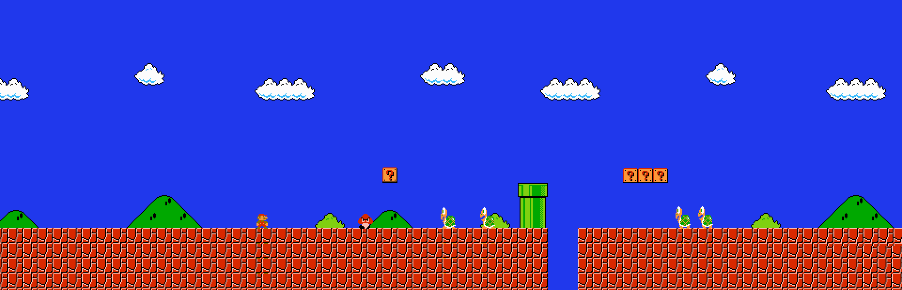

Productos destacados
Tu carrito
Aún no agregas productos. Elige alguno del catálogo.
Total (0 artículos): $0
Opiniones de la comunidad
Cargamos reseñas reales de compradores en tiempo real usando la Fetch API.



Aún no agregas productos. Elige alguno del catálogo.
Total (0 artículos): $0
Cargamos reseñas reales de compradores en tiempo real usando la Fetch API.